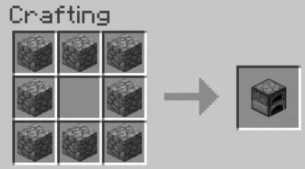

So you've downloaded Minecraft but don't know how to play!
This guide will help you start out on your game.
Step one: Open the Minecraft Launcher.
Step three: Push Single Player
Step four: Push Create New World
Step five: Choose settings and push Create New World
Step six: Find a tree, and then push left click to punch it down!
(Because why not)
Step 7: Push "E" to open inventory.
To craft, you have to put items in the square next to you.
But you can also open the recipe book in order to craft easier.
Step 8: Put your wood logs into one of the squares to make planks.
Step 9: Put your planks in a sqaure shape to make a Crafting Table
Step 10: Place the Crafting Table by right clicking on another block.
Step 11: Right click on the table again to get a bigger crafting area.
When you do, put two planks on top of each other to make sticks.
Step 12: Stack two sticks and 3 planks on each other
to make a Pickaxe. You use these to mine stone to get better tools.
Step 13: Dig downwards to find stone.
Once you do, get your Pickaxe
and left click on the stone to mine it.
Stone will drop Cobblestone once you mine it.
But if you mine it with your bare hands, it won't drop anything.
Step 14: Once you get enough cobblestone, make a furnace.
You can smelt things to get better things.

Step 15: Get more wood, then place the furnace and right click
on it.
Then, but oak logs on the top and the bottom of the left side.
Step 16: Once it's done, you can make torches.
Stack a piece of Charcoal on a stick.
Step 17: Placing your torches will light the area
up at night, preventing monsters from spawning.
(More on that later)
Step 18: Dig inside of a mountain, to make
a temporary house.
Then you are done!
NOTE! Those hearts you see at the bottom?
If you run out of them, you die!